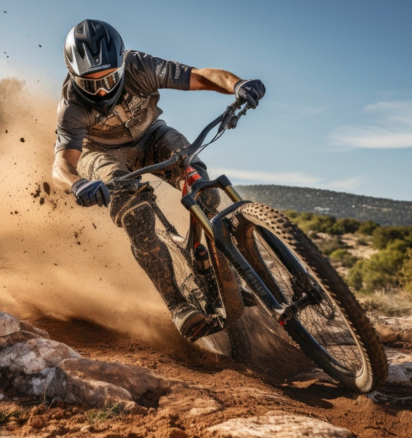
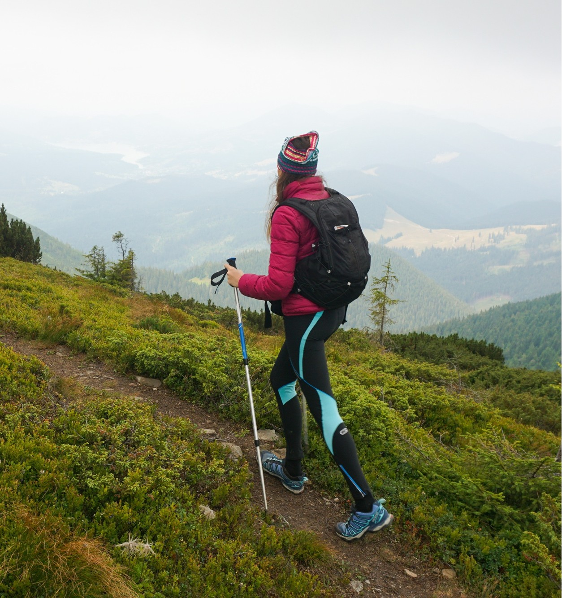
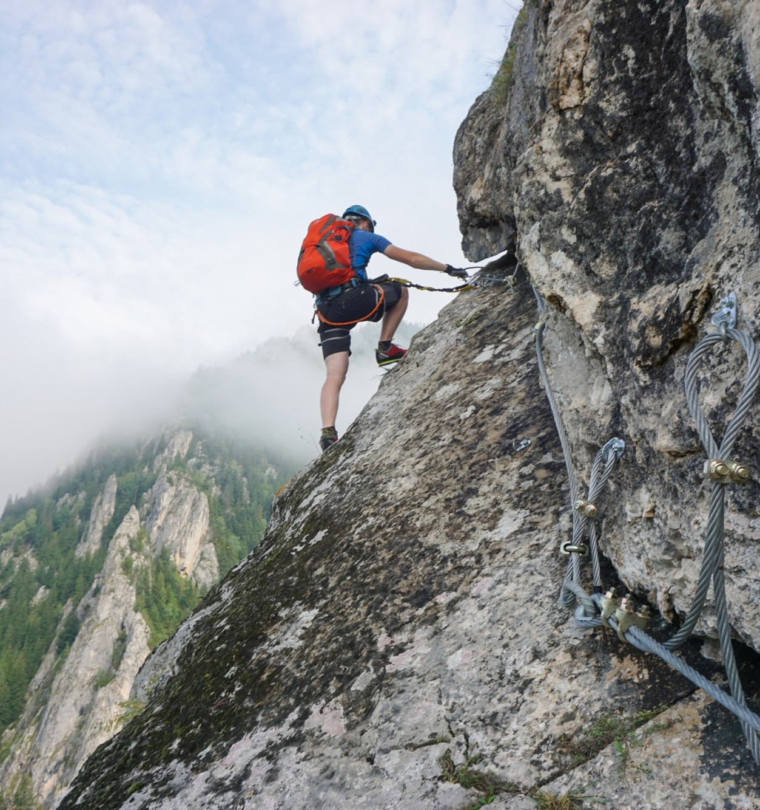
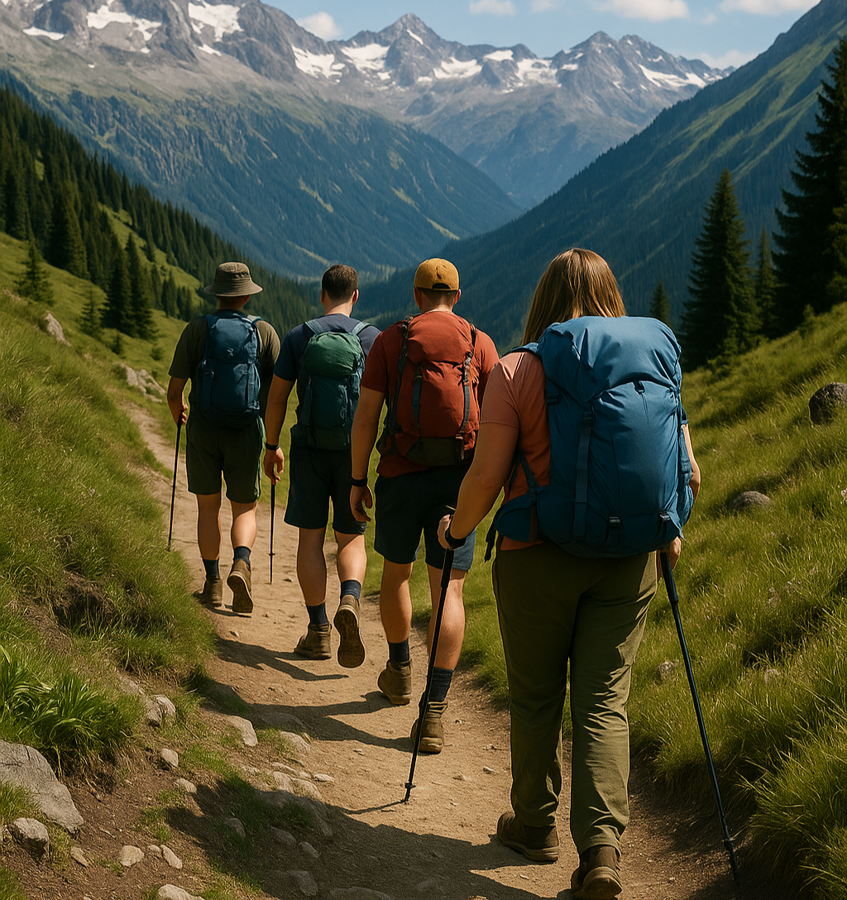
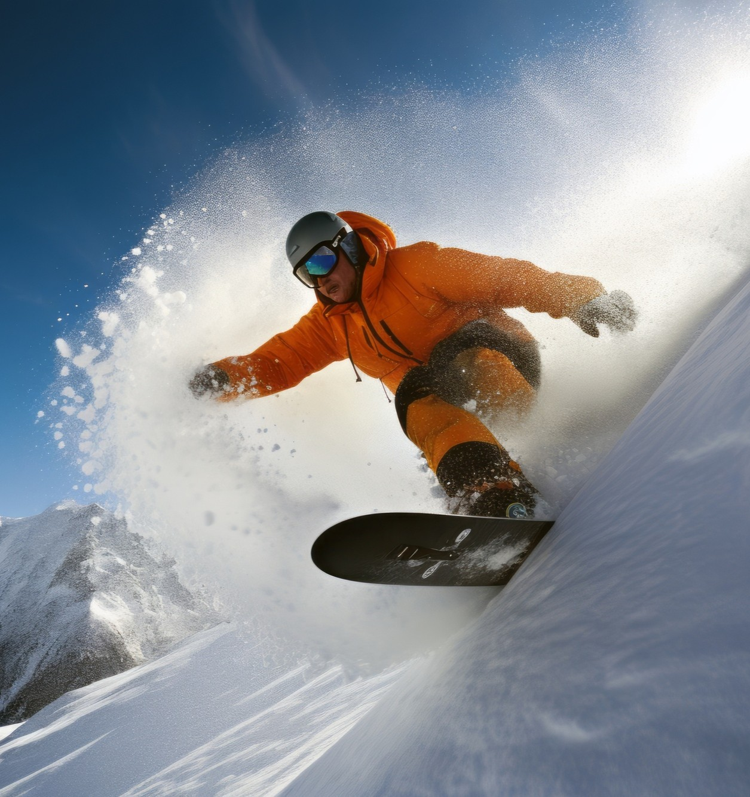
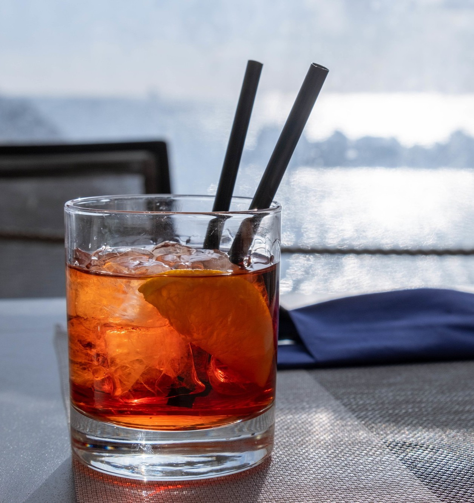
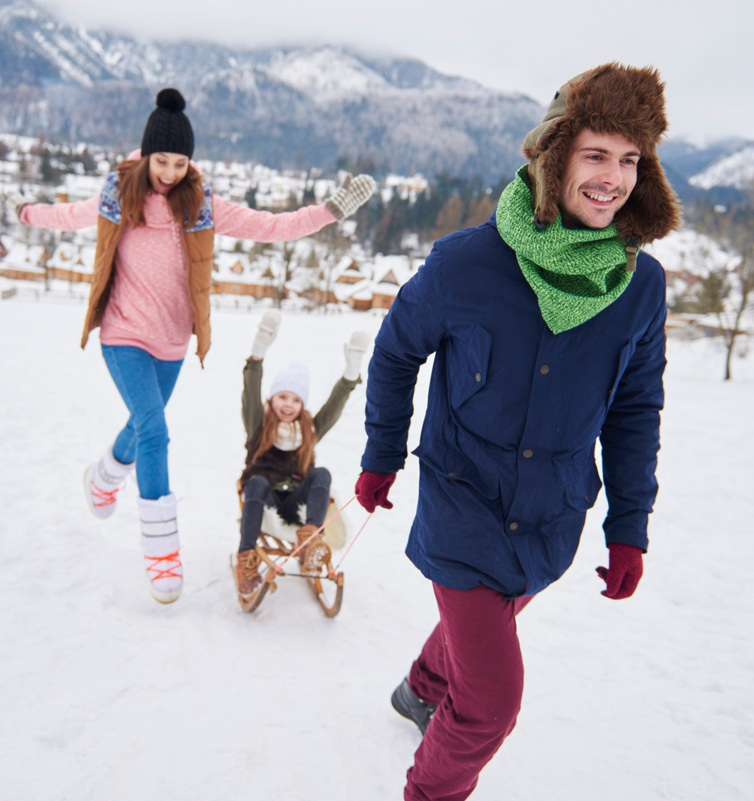

ENTDECKEN SIE SÖLDEN
Sölden ist eine malerische Stadt in Tirol, Österreich, und bekannt als eines der renommiertesten Skigebiete in den Alpen. Gelegen im Ötztal bietet es Besuchern atemberaubende Ausblicke auf Berggipfel, mit mehreren Dreitausender-Gletschern, die das ganze Jahr über hervorragende Skibedingungen garantieren.
In Sölden finden Sie moderne Skigebiete mit über 144 Kilometern Pisten, darunter die berühmten Giggijoch- und Gaislachkogl-Abfahrten. Dank der hohen Lage und fortschrittlicher Beschneiungstechnologien können Sie hier fast immer mit Schnee rechnen.
Sölden ist nicht nur ein Paradies für Skifahrer. Es bietet auch ein reichhaltiges Kulturprogramm, Wellnesszentren, Thermalbäder im nahegelegenen Längenfeld und ein lebhaftes Nachtleben mit vielen Restaurants und Bars. Die natürliche Schönheit der Umgebung kann auf Wanderwegen erkundet werden, die durch malerische alpine Landschaften führen.
Sölden ist ein ideales Ziel für alle, die eine Kombination aus sportlichen Aktivitäten, Entspannung und alpinem Charme suchen.
SOMMER IN SÖLDEN...
Im Sommer wird Sölden zu einem Paradies für Outdoor-Enthusiasten. Erkunden Sie atemberaubende alpine Landschaften auf gut markierten Wanderwegen, stellen Sie sich spannenden Mountainbike-Strecken oder erleben Sie das Klettern in den Ötztaler Alpen. Für ein geführtes Erlebnis nehmen Sie an einer der vielen organisierten Touren teil und entdecken Sie die verborgenen Schätze dieser beeindruckenden Region.
Mountainbiken in Sölden bietet atemberaubende Ausblicke und aufregende Abfahrten. Mit Trails für alle Schwierigkeitsgrade ist es perfekt für Anfänger und erfahrene Fahrer. Die Ötztaler Alpen bieten eine beeindruckende Kulisse für Ihr Abenteuer und machen es zu einem unvergesslichen Erlebnis für Mountainbike-Enthusiasten.
Wandern in Sölden bietet atemberaubende Ausblicke und ruhige alpine Landschaften. Mit Wegen für alle Schwierigkeitsgrade ist es perfekt für eine friedliche Auszeit oder eine abenteuerliche Wanderung. Erkunden Sie die Schönheit der Ötztaler Alpen und tauchen Sie in die Ruhe der Natur ein.
Klettern in Sölden bietet atemberaubende Ausblicke und spannende Herausforderungen. Mit Routen für alle Schwierigkeitsgrade ist es perfekt für Anfänger und erfahrene Kletterer. Die beeindruckenden Felsformationen und die alpine Landschaft machen es zu einem Top-Ziel für Kletterbegeisterte.
Geführte Touren in Sölden bieten atemberaubende Ausblicke und einzigartige Erlebnisse. Mit erfahrenen Guides ist es perfekt, um verborgene Schätze zu entdecken und mehr über die Region zu erfahren. Entdecken Sie die Schönheit der Ötztaler Alpen und gewinnen Sie Einblicke in die lokale Kultur und Geschichte.
WINTER IN SÖLDEN...
Im Winter verwandelt sich Sölden in ein Paradies für Schneeliebhaber. Erkunden Sie perfekt präparierte Pisten zum Skifahren und Snowboarden, genießen Sie aufregende Rodelbahnen oder erleben Sie die Atmosphäre des Après-Ski in lebhaften Berghütten. Für ein geführtes Erlebnis nehmen Sie an einer der vielen organisierten Touren teil und entdecken Sie die verborgenen Schätze dieses beeindruckenden Winterwunderlandes.

Skifahren in Sölden bietet ein unvergleichliches Erlebnis mit über 144 Kilometern perfekt präparierter Pisten. Egal, ob Sie Anfänger oder Experte sind, die Vielfalt der Abfahrten und die hervorragenden Schneebedingungen machen es zu einem Top-Ziel für Skifahrer weltweit.
Snowboarden in Sölden ist ein aufregendes Abenteuer für Fahrer aller Niveaus. Mit speziellen Snowparks, breiten Pisten und Off-Piste-Möglichkeiten können Snowboarder endlosen Spaß in der beeindruckenden alpinen Umgebung genießen.
Après-Ski in Sölden ist legendär und bietet lebhafte Bars, gemütliche Berghütten und ein pulsierendes Nachtleben. Nach einem Tag auf der Piste entspannen Sie sich mit Freunden, genießen lokale Köstlichkeiten und tauchen in die festliche Atmosphäre ein.
Rodeln in Sölden ist ein Spaß für alle Altersgruppen. Rasen Sie die gut gepflegten Bahnen hinunter, umgeben von atemberaubenden Winterlandschaften, und schaffen Sie unvergessliche Erinnerungen mit Familie und Freunden.